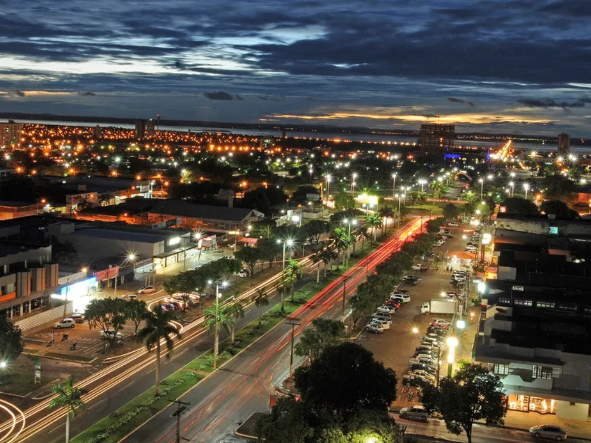

O Tocantins é o estado mais novo do Brasil, localizado na região Norte e criado em 1988. Sua capital, Palmas, foi planejada e construída para ser o centro administrativo do estado. Tocantins possui belas paisagens naturais, com rios, cachoeiras e áreas de cerrado que atraem turistas. A economia do estado é baseada principalmente na agropecuária, no comércio e na produção de grãos.

> Voltar